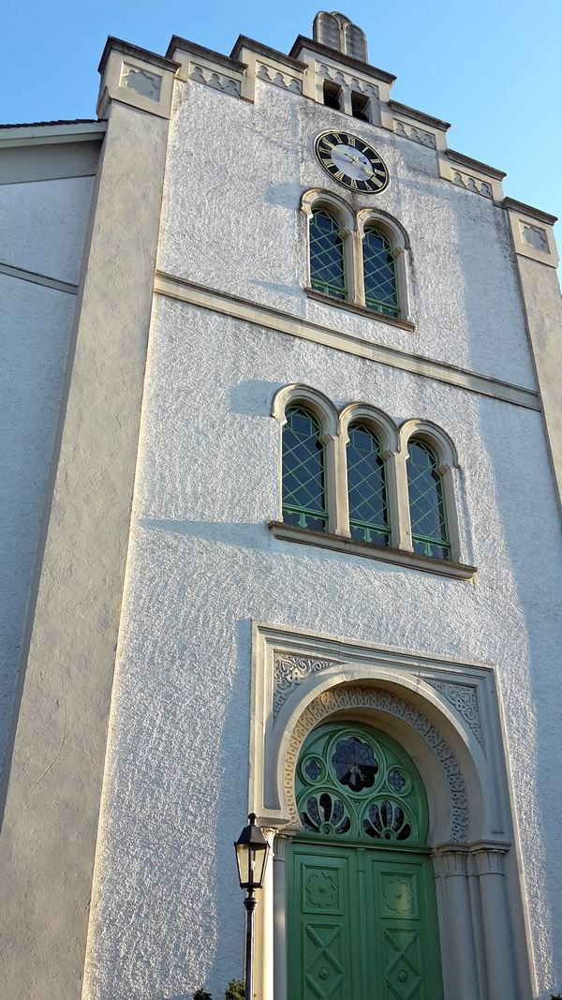
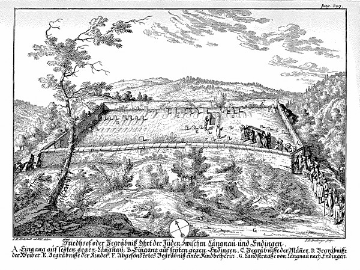
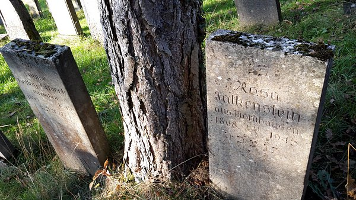

«Endingen und Lengnau sind zwey ansehnliche Dörfer im Bader-Gebiet, in deren einem jeden sich Juden unter dem Schuz der Hohen Landes-Obrigkeit aufhalten, da sonsten in der ganzen Schweitz keine Juden mehr wohnen dörfen. Diese zwey Dörfer allein sind dermalen das Asylum der Juden in unseren Helvetischen Landen.» Als Johann Caspar Ulrich, reformierter Pfarrer am Zürcher Fraumünster und Autor der «Sammlung jüdischer Geschichten», im Jahr 1768 Endingen und Lengnau so verortete, gab es schon seit einigen Jahren eine jüdische Baukultur in bzw. zwischen den beiden Dörfern: zum einen die Synagoge von Lengnau (1750 eingeweiht) und jene von Endingen (1764 errichtet), zum andern, auf halbem Weg, den jüdischen Friedhof (1750 erworben). Zuvor mussten die Juden ihre Verstorbenen auf dem sogenannten Judenäule, einer damals nicht leicht erreichbaren Rheininsel bei Koblenz, begraben.
Die Synagoge von Endingen, mit Uhr und Glocken. (Bild: Eva Tyrell)
Jüdische Präsenz
Juden sind im Surbtal seit dem ersten Drittel des 17. Jahrhunderts belegt. Die beiden Dörfer gehörten zur Grafschaft Baden, die den Juden zeitlich befristete Schutz- und Schirmbriefe ausstellte. Bis zum Anfang des 19. Jahrhunderts durften sich Juden in der Schweiz nur in Endingen und Lengnau dauernd niederlassen. Die vollkommene bürgerliche Gleichberechtigung in der Schweiz wurde den Juden vom Bund erst 1874 (1879 im Kanton Aargau) und nur auf Druck aus dem Ausland zugestanden. Die Geschichte des Schweizer Judentums ist seit dem Mittelalter geprägt von Abhängigkeiten von der christlichen Mehrheitsgesellschaft. Diese Machtverhältnisse spiegeln sich auch in Ulrichs «Geschichte des Schweizer Judentums» wider: Zwar ist er den Juden Endingens und Lengnaus dankbar, dass sie ihm bei seinen Forschungen behilflich waren, und Ulrichs Interesse gerade an Endingen und Lengnau ist gross, aber sein Bild vom Judentum ist gleichzeitig dasjenige, das von klerikaler Seite noch lange vorherrschen sollte: «In welcher Rabbinischer Gefängnutz die armen Juden, wie in einem tiefen finsteren Kerker, verderben», schreibt Ulrich mit Bedauern.
Die Synagogen
Nur dank Ulrichs Beschreibungen können wir die ursprünglichen Bauten der beiden Synagogen von Endingen und Lengnau einigermassen rekonstruieren. Die heute noch zu besichtigenden, prächtigen Synagogen gehen auf die Mitte des 19. Jahrhunderts zurück (1847 Lengnau; 1852 Endingen). Es handelt sich um in mancherlei Hinsicht aussergewöhnliche Bauten: Die Synagoge in Endingen, wo bis heute keine Kirche steht, hat eine Uhr mit Glockenschlag. Zwar befindet sich die Synagoge im etwas versteckten «Hinterstieg» (anders als in Lengnau, wo die Synagoge auf dem Dorfplatz steht), aber nur sie gibt im Dorf die Zeit an.
Der Friedhof
Der jüdische Friedhof Endingen-Lengnau. Stich von Johann Balthasar Bullinger nach Johann Rudolf Holzhalb. Aus: Johann Caspar Ulrich, Sammlung Jüdischer Geschichten: welche sich mit diesem Volk in dem XIII. und folgenden Jahrhunderten bis auf 1760 in der Schweitz von Zeit zu Zeit zugetragen: Zur Beleuchtung der allgemeinen Historie dieser Nation herausgegeben, Basel 1768, S. 299. (http://www.e-rara.ch/doi/10.3931/e-rara-10058)
Vom Friedhof ist in Ulrichs Werk ein Stich mit noch wenigen Gräbern abgedruckt. Die Merkmale des Friedhofs sind jene, die auch noch dem heutigen Besucher auffallen: Es gibt einen eigenen Eingang für die beiden Dörfer. Frauen und Männer sowie Kinder sind getrennt begraben. Die Gräber sind seltsamerweise von Norden nach Süden ausgerichtet (statt der zu erwartenden Ausrichtung gegen Osten, nach Jerusalem hin). Es gibt keinerlei Grabschmuck. Die Endinger und Lengnauer Juden nannten den Friedhof in ihrer Surbtaler jiddischen Aussprache «beis oulem» (von hebräisch עולם בית, «Haus der Ewigkeit») oder aber schlicht den «guten Ort». Schlichtheit spricht auch aus den meisten Grabinschriften. Ob auf Hebräisch, wie in den älteren Grabsteinen, oder später auf Deutsch: Aus der Sprache, den Eulogien und vereinzelt auch den Berufsangaben ergibt sich das Bild eines einfachen Landjudentums. Nur die höheren Grabstelen der Surbtaler Rabbiner mit ihren langen Inschriften fallen etwas aus der Reihe. Dass grosse Namen wie Meyer Guggenheim, der in Lengnau zur Welt kam und dessen Sohn Solomon hinter dem New Yorker Guggenheim-Museum steht, oder William Wyler, Bürger von Endingen und Regisseur des gewaltigen «Ben Hur», mit dem jüdischen Surbtal verbunden sind, klingt wie aus einer anderen Welt. Über dem ältesten jüdischen Friedhof der Schweiz liegt eine Aura der Ewigkeit: Seit über einem Vierteljahrtausend werden hier Jüdinnen und Juden begraben, und der Friedhof ist weiterhin in Betrieb. Jüdische Gräber dürfen nicht aufgehoben, die Ruhe der Verstorbenen darf nicht gestört werden. Auf dem Surbtaler Friedhof sind die ältesten Gräber längst mit der Natur verwachsen. Wer heute auf den Spuren des Surbtaler Judentums gehen möchte, kann dies auf dem gut ausgeschilderten Jüdischen Kulturweg Endingen-Lengnau tun. Die beiden Synagogen und der Friedhof können nur nach Anmeldung besichtigt werden. Die Geschäftsstelle «Jüdischer Kulturweg Endingen Lengnau» bietet regelmässig Führungen an. Die beiden Dörfer sind knapp vier Kilometer voneinander entfernt und zu Fuss angenehm erreichbar.
Grabsteine auf dem Friedhof zwischen Endingen und Lengnau. (Bild: Eva Tyrell)
Dr. René Bloch ist Professor für Judaistik an der Universität Bern.
Weitere Artikel von {{ author.author }} finden Sie hier:
Zur Vertiefung:
- Verein für die Erhaltung der Synagogen und des Friedhofs Endingen-Lengnau: Judenfriedhof Endingen-Lengnau, 4 Bde., Baden 1993–1998.
- Hunziker Edith / Weingarten Ralph: Die Synagogen von Lengnau und Endingen und der jüdische Friedhof, Kanton Aargau, Bern 2005.